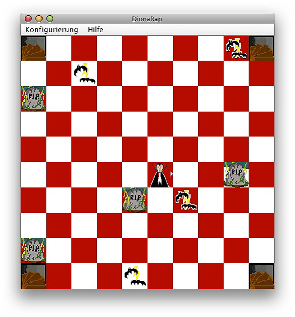
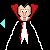
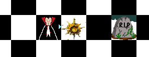
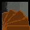

Das Spiel „DionaRap“

„DionaRap“
ist ein strategisches Spiel, in dem der Spieler die Rolle des Protagonisten
einnimmt und sich gezielt von den Antagonisten entfernen muss. Es ist
vorgesehen, dass „DionaRap“ nur von jeweils
einem Spieler gespielt werden kann. Das Spiel enthält keine 3D- Komponenten und
wird auf einer schachbrettförmigen Oberfläche gespielt.
DionaRap wurde in Projektarbeiten von Studierenden der
Hochschule Ravensburg-Weingarten entworfen und implementiert.
Urheber dieses Spiels
sind Frau Lydia Vogel, Studentin Studiengang AI und Herr Christoph Sonntag Student Studiengang WI. Erweitert auf
Multi-Threading wurde das Spiel von Kristikan Prsir, ebenfalls Student im Studiengang Angewandte
Informatik.
Ziel des Spieles ist,
dass sich der Spieler (Protagonist) durch gezieltes Bewegen auf dem Spielfeld
fortbewegt und dabei alle vorhandenen Feinde (Antagonisten) vernichtet.
Die Antagonisten
bewegen sich auf den Protagonisten zu, so dass dieser versuchen muss seinen
Feinden zu entkommen. Durch geschickte Bewegung des Spielers auf dem Spielfeld
kann der Protagonist erreichen, dass sich die Feinde selbst durch
Ineinanderlaufen oder Auflaufen auf ein Hindernis zerstören. Durch Einsatz
seiner Waffe kann der Spieler auch einen Antagonisten gezielt abschießen.
Der Spieler hat das
Spiel gewonnen, wenn alle Antagonisten zerstört wurden.
Der Spieler hat
verloren, wenn er von einem Antagonisten eingeholt wird und der Antagonist die
Spielposition des Protagonisten besetzt.
Das Spiel kann in
zwei Modi gespielt werden:
Das Spiel läuft in
einem Thread ab. Die Antagonisten bewegen sich nur nach einer Bewegung des
Spielers.
Für jeden Gegner wird
ein eigener Thread erzeugt. Die Gegner bewegen sich selbständig auf den Spieler
zu, auch wenn dieser keine Bewegung ausführt. Der Spieler läuft im Haupt-Thread
der Anwendung.
Folgende Spielfiguren
können auf dem Spielfeld platziert werden:
Im SD-Modus wird der Spieler am
Spielanfang in der Mitte des Spielbrettes platziert. Er hat beliebig viel
Munition zum Schießen
Im MT-Modus kann sich der Spieler zu Beginn auf jeder beliebigen
Position befinden. Seine Munition kann auf
0 - n Schüsse begrenzt sein.
Im
SD-Modus werden 4 Vortexobjekte erzeugt. In jeder Ecke des Spielbretts befindet sich ein Vortex
Im MT-Modus können beliebig viele Vortexobjekte auf beliebigen Feldern des Spielbretts
positioniert sein
Positionen der
Spielfiguren auf dem Spielfeld
Die Positionen der
Spielfiguren wird bei jedem Spielneustart rein zufällig festgesetzt, ist somit
nicht vorhersehbar und damit nicht beeinflussbar.
Nachdem ein
Protagonist ein Vortexobjekt erreicht hat, wird er
erneut an eine zufällige, freie Stelle auf dem Spielfeld portiert.
Protagonisten

Der Spieler von „DionaRap“ übernimmt
die Rolle des Protagonisten. Es kann sich nur ein Protagonist auf dem Spielfeld
befinden.
Der Protagonist besitzt eine "Blickrichtung", die von der letzten Bewegung abhängig ist.
Fortbewegung des
Protagonisten auf dem Spielfeld
Der Protagonist kann sich pro Zug nur einen Schritt auf eines der acht
angrenzenden Felder bewegen. Hindernisse, Gegner, sowie die Ränder des
Spielfelds begrenzen die Bewegung.
Waffe des
Protagonisten
Während der Antagonist selbst keine aktive Waffe besitzt, hat der
Spieler die Möglichkeit einen Antagonisten aktiv zu vernichten, indem er seine
„Waffe“ gegen ihn einsetzt.
Im
SD-Modus wird die Munition nach zwei Seiten abgefeuert. Diese Aktion des
Spielers wird analog einer Bewegung
gewertet; es bewegen sich also alle Gegner auf den Spieler zu und es werden
Punkte abgezogen, sollte kein Gegner getroffen werden.
Die jeweilige „Blickrichtung“ (siehe Screenshot)
des Protagonisten ist NICHT die Schussrichtung. Der Protagonist kann jeweils
nur, ausgehend von seiner „Blickrichtung“, nach rechts und links seine Waffe jeweils
zwei Felder weit, abfeuern.
Durch erfolgreiches Einsetzen der Waffe verwandeln sich getroffene
Gegner ebenfalls in Hindernisse.

Im
MT-Modus wird nur nach einer Seiten Munition abgefeuert und zwar immer in
Blickrichtung des Spielers. Der Spieler kann allerdings nur solange seine Waffe
benutzen, solange er noch Munition besitzt. Durch erfolgreiches Einsetzen der
Waffe verwandeln sich getroffene Gegner ebenfalls in Hindernisse.
Durch einsammeln von Munitionsobjekten auf dem Spielfeld kann der
Spieler seine Anzahl von Schüssen erhöhen.
Antagonisten
Die Gegner des
Protagonisten sind die Antagonisten. Zu Beginn des Spieles befinden sich mehrere
Antagonisten an zufälligen Positionen auf dem Spielfeld. Die Anzahl der
Antagonisten ist frei wählbar.
Fortbewegung der
Antagonisten auf dem Spielfeld
Die Bewegungen der
Antagonisten auf dem Spielfeld folgen bestimmten Regeln und können vom Spieler
nicht direkt beeinflusst werden.
Im SD-Modus bewegen sich die Gegner
nur einer Bewegung des Spielers. Bleibt der Spieler auf seiner Position stehen
bewegen sich auch die Gegner nicht. Die Antagonisten bewegen sich nach dem
Prinzip des „kürzesten Pfades“ auf den Protagonisten zu.
Im MT-Modus wird jedem Gegner ein
eigner Thread zugeordnet. Die Gegner können sich damit unabhängig vom Spieler
selbständig bewegen, auch wenn der Spieler keine Aktivität zeigt. Nach einer
einstellbaren Startzeit beginnen die Gegner sich selbständig auf den Spieler zu
zubewegen. Die Geschwindigkeit, mit der sich die Antagonisten bewegen ist
ebenfalls einstellbar. Die Bewegung jedes Gegners wird über den A*-Algorithmus
berechnet.
Hindernisse, Vortex- und Munitionsobjekte wechseln ihre Position während
eines Spieles nicht, bzw. reagieren nicht auf die Bewegung des Protagonisten.
Hindernisse
Eine Hilfe für die
Protagonisten sind die so genannten Hindernisse auf dem Spielfeld. Auch hier
ist die Anzahl von Hindernissen frei wählbar.
Die Hindernisse
werden zufällig auf dem Spielfeld verteilt. Wenn sich ein Hindernis auf einem
der Felder im Spiel befindet, kann ein Spieler dieses nicht überqueren.
Gleiches gilt für einen Antagonisten, wobei sich dieser beim Hineinlaufen in
ein Hindernis selbst zerstört und ebenfalls zum Hindernis an dieser Stelle
wird.
Hindernisse wechseln
ihre Position während eines Spieles nicht.
Vortexobjekte

Im
SD-Modus befindet sich in jeder Ecke des Spielfelds ein Vortex.
Auf Gegner und Hindernisse haben diese Felder keinerlei Auswirkung. Betritt der
Spieler einen Vortex, so wird er auf ein zufälliges,
freies Feld im Spiel versetzt. Das Benutzen des Vortex
birgt ein gewisses Risiko, da sich die Gegner erst nach der Neupositionierung
bewegen, und auch ein Versetzen direkt neben einen Gegner möglich ist. Dies ist
jedoch oft die einzige Möglichkeit zu entkommen.
Im MT-Modus
können beliebig viele Vortexobjekte auf beliebigen
Positionen im Spielfeld verteilt werden.
Vortexobjekte wechseln ihre Position während
eines Spieles nicht.
Das Spiel ist für den
Spieler gewonnen, wenn sich kein Gegner mehr auf dem Spiel befindet.
Das Spiel ist verloren,
wenn ein Gegner sich auf dasselbe Feld wie das des Protagonisten setzt bzw.
dieses durch Fortbewegung erreicht und damit den Protagonisten vernichtet.
Über Sieg oder
Niederlage wird durch einblenden eines Dialogfensters informiert.
Über den gesamten Spielverlauf wird für den Spieler ein Zähler
aktualisiert, der jede Aktion des Spielers mit Punkten bewertet. Zu Spielbeginn
enthält der Zähler 0 Punkte. Der Zähler
kann nicht negativ werden.
Der Spieler kann durch Zerstören der Antagonisten mehrere Punkte erhalten, verliert jedoch bei
jeder Bewegung auf dem Spielfeld wieder einen Punkt.
Ein aktuelles Spiel
kann nur durch Sieg oder Niederlage unterbrochen und neu gestartet werden. Nachdem man einen Sieg oder eine Niederlage erzielt hat, werden die
Spielfiguren erneut auf dem Feld platziert und eine neue Runde beginnt.
In der MT-Version kann das Spiel
frei konfiguriert werden.
.
Konfigurationsmöglichkeiten
für das Spiel:
a)
Festlegung
des Spielfeldes:
Man kann die Anzahl der Spielfelder in
horizontaler und vertikaler Richtung festlegen. Damit ist auch ein nicht quadratisches
Spielfeld möglich
b)
Anzahl
der Schüsse und Munitionsobjekte.
Man kann die Anzahl
der Schüsse auf unendlich oder auf einen endlichen Wert setzten. Bei endlicher
Anzahl von Schüssen, hat man die Möglichkeit Munitionsobjekte auf dem Spielfeld zu verteilen.
Durch Aufsammeln von Munitionsobjekten
kann der Spieler seine Schusszahl erhöhen.
c)
Vortexobjekte können auf beliebige
Postionen im Spielfeld positioniert werden
d)
Gegner
und Hindernisse können auf bestimmten Positionen des Spielfeldes positioniert
werden
e)
Die
Wartezeit der Antagonisten bevor Sie sich das erste mal in Bewegung setzten
kann frei festgelegt werden
f)
Die
Geschwindigkeit (Wartezeit zwischen einer Bewegungen) der Antagonisten kann frei
konfiguriert werden
g)
Eine
Kollission des Antagonisten mit anderen Antagonisten
oder Hindernissen kann vermieden werden
Die Konfiguration eines
Spiels wird in einer Leveldatei abgelegt. Diese Leveldatei
ist eine xml-Datei und kann daher mit einem normalen
Text-Editor erstellt werden.
Über diese Leveldateien, die man vor einer neuen Spielrunde laden
kann, ist es möglich verschiedene
Schwierigkeitsstufen einzustellen
Durch die Wahl
unterschiedlicher Themen, kann man dem Spiel
unterschiedliches Aussehen verleihen.
Ein Thema wird
definiert durch die Verwendung bestimmter Symbole für die Spielfiguren, dazu passende
Farbgebung der Spielfelder oder der Verwendung bestimmter Hintergrundbilder.